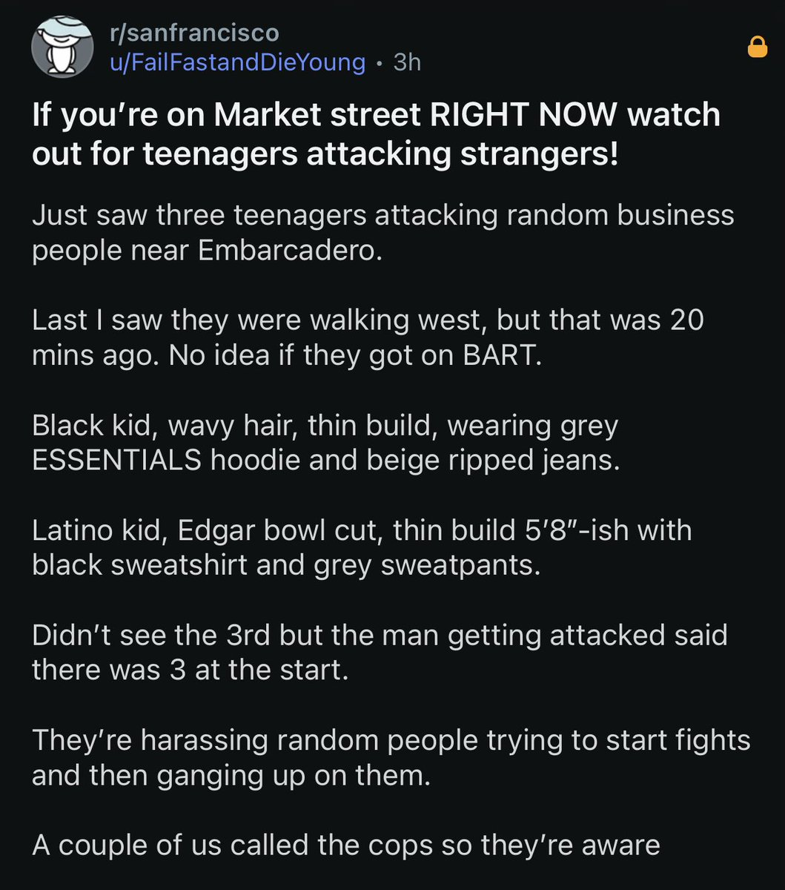

绿色杯子千尋醬喵～🏳️⚧️🇺🇸
@qianxunchan
盐都不言了，真就teenager杯……
SFPD干什么吃的，快点电击他们啊！
还有黑哥抢劫……黑哥本色了是吧……

Asian Crime Report
@activeasian
a man in downtown San Francisco is attacked by thugs! Is the guy who helped save the victim Asian? https://t.co/31u1Gt0e2U